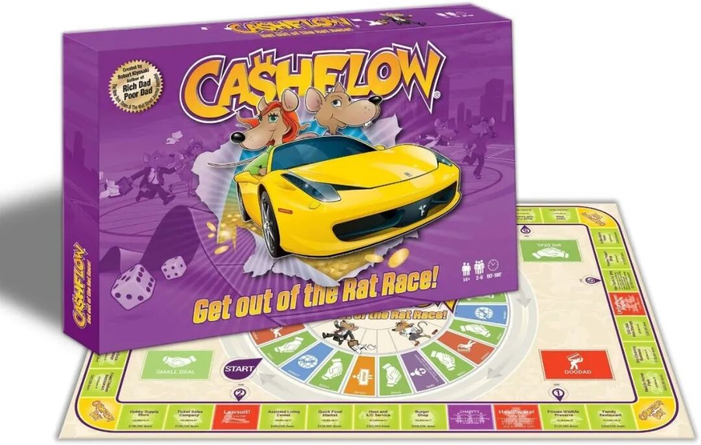
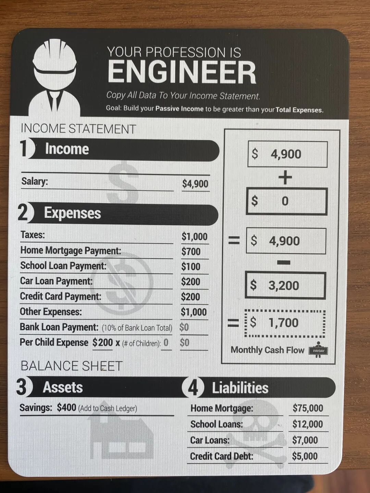
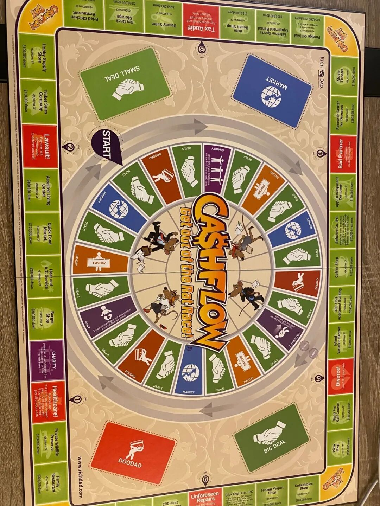
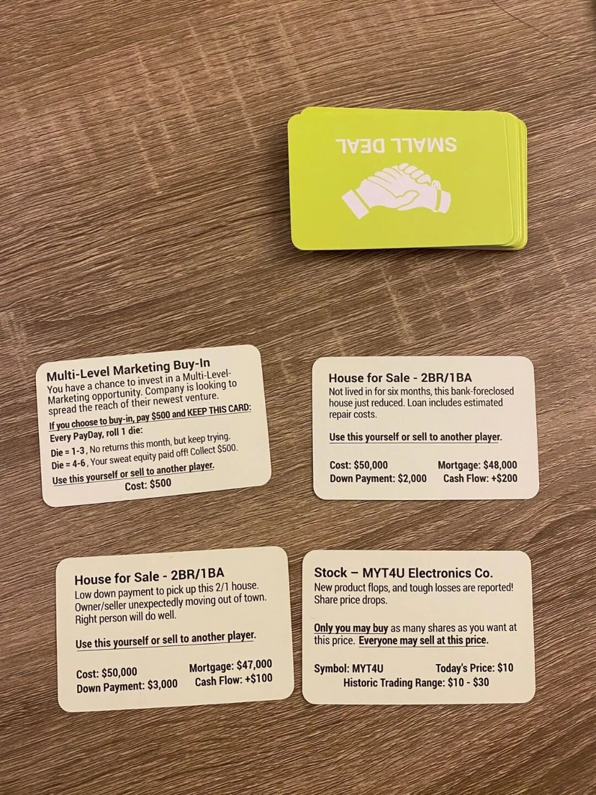
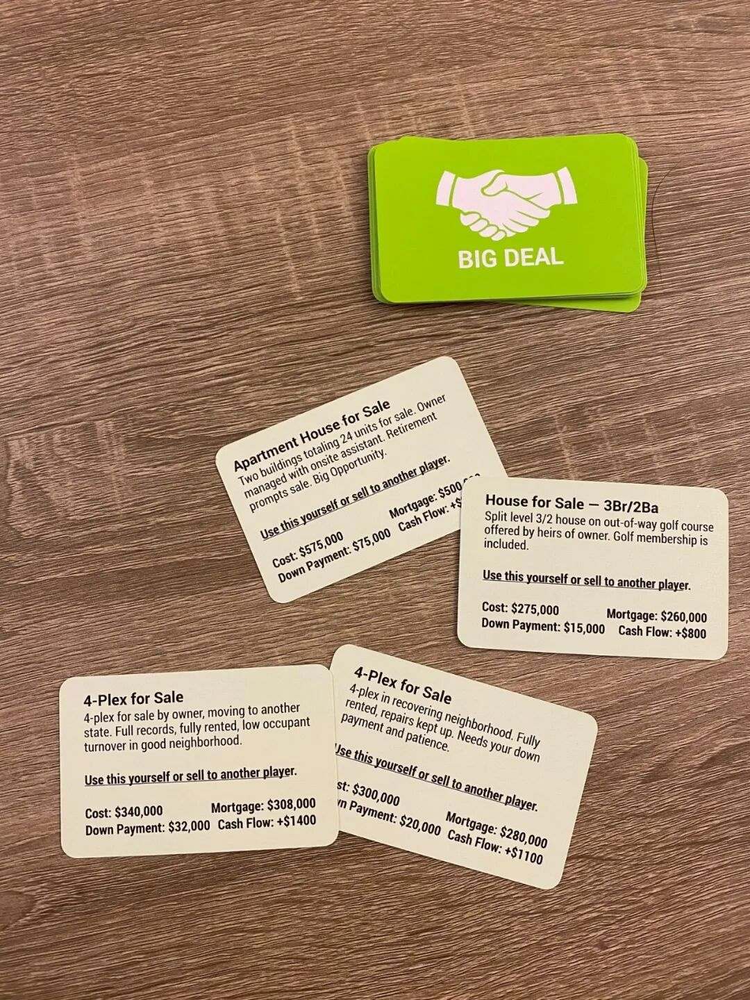
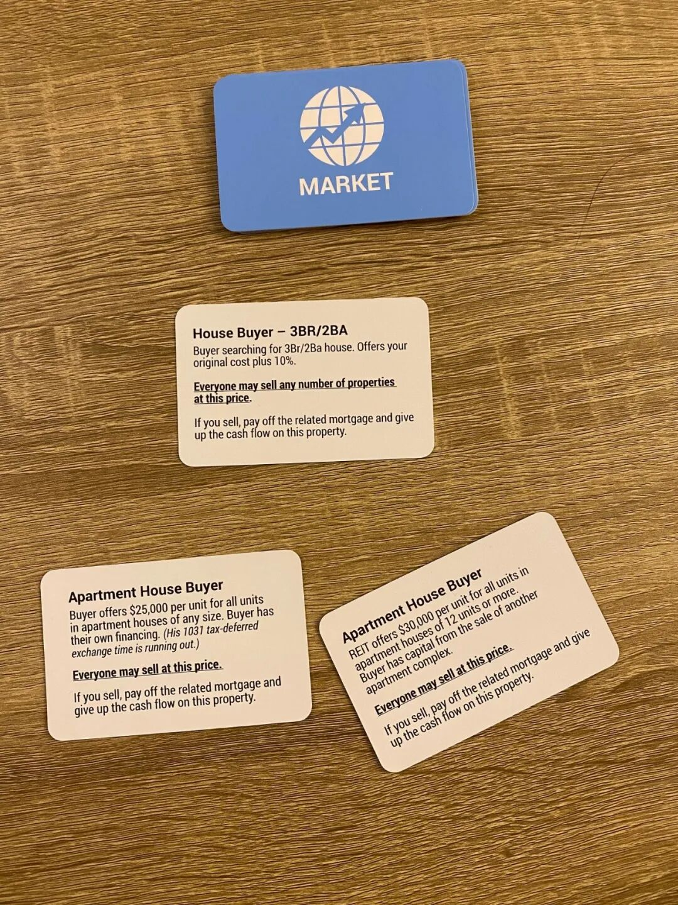
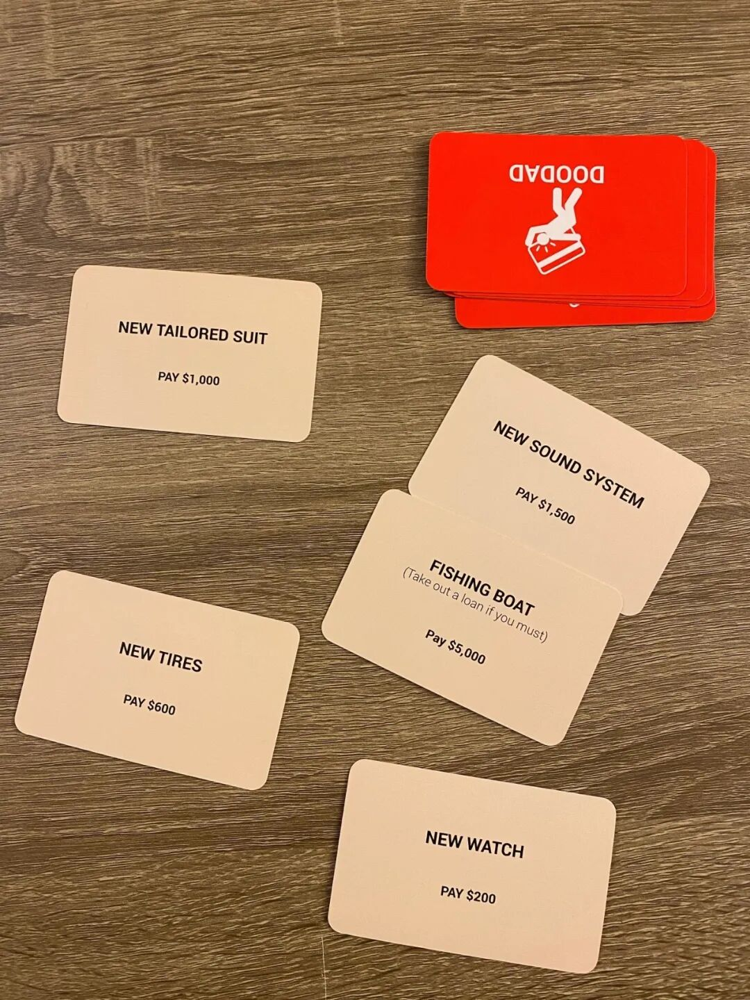

最近在看《穷爸爸富爸爸》系列，里面反复地提到作者公司开发的一款叫《CashFlow》的桌游产品。出于好奇，我就去买了一个。
这款桌游的定价要比大部分桌游要贵不少，在Amazon上面定价79.99，而且销量非常不错，评分也高达4.6/5.0。到货以后我自己一个人分演两个玩家，自己跟自己玩了一盘，算是了解了一下规则，以及它背后的“教育意义”。
这个游戏跟大富翁非常类似，也是每到一定的时间点就会得到一笔资金，然后你可以用这笔资金买地或者买股票以及其它资产。不过稍有不同的是，这笔每隔一段时间会提供给你的资金，会根据你当前拥有的资产的不同而不同。比如说你现在已经买下了三个房子，那每当你走过一个发工资的节点的时候，你的房子也会给你提供对应的租金。而如果你欠债的话，你的工资也会相应地扣掉那些债务对应的利息。
在游戏的一开始，每位玩家都会分配到一个当前的职业。比如说如果你被分配到的职业是工程师的话，你的当前财务状况会如下图所示，跟我们华人大部分的工程师的财务状况可能不太一样，但是说不定非常像大部分美国人的财务状况吧。

图中的第一栏Income显示4900，对应这个工程师的月收入。
同时从这笔收入中，他需要扣除很多别的花销，第二栏Expenses里显示的就是他的这些花销，比如应缴税款1000，应付房贷700，学生贷款100，车贷200，信用卡利息200，以及其它开支1000，所有的这些花销加起来有3200。
如果综合收入和费用这两栏来说，这个工程师每个月可以攒下来4900-3200=1700美金，能存下来的钱还是相当可观的，高达1700/4900 = 34.6%。我觉得当代的大部分工程师还是很难没法把自己的税前收入的34.6%存下来。一方面是税率比这里高很多，另一方面每个月的花销也绝对不止这个数，不过绝对数额肯定要比这个高一些。
除了这些，图中的第三栏Assets是当前这个工程师的资产，图中显示这个工程师当前有400的存款。
第四栏Liabilities是负债，可以看到这个工程师欠了75000的房贷，12000的学生贷款，7000的车贷，5000的信用卡帐。这样的负债比例确实是比较高的。
游戏第一阶段的目标是利用工资累积下来的资本来还债，并且积累下一定资本后进行投资，最终达到投资的被动收入超过每个月花销的目的。从这个点开始，每一块多出来的钱都可以用来进一步投资，滚出更多的钱，也就是所谓的跳出了Rat Race，走上了资本累积的罪恶道路。

如上图所示，第一阶段的游戏在游戏的内圈中进行。这里最主要的行动一共有四种。
第一种是橙色的payday位置，每次经过这个位子，都可以按照当前的收入减去花销算出可以拿多少钱。
第二种是绿色的Deal位置，每次停留在这个位置的时候，都可以选择抽一张小deal或者大deal卡。

如上图所示，小deal卡一般需要投入的资金不太多，一般也就是1000-3000不等。一旦投资了这种资产以后，每月的现金流就可以增加大约投资额的5-10%。这个当然跟现实中每年5-10%的年化收益整整差了10倍，不过如果把时间跨度拉大的话，资本产生的效果还是类似的。

大deal卡需要的投入则会多得多，从15000 - 80000不等。不过这样的投入背后是更大的回报率，一般能有10-20%的回报率，这也和现实生活中比较类似，一般高收益率的项目投资的金额要求会更高，入门的门槛也更高。

除此以外，还有一种类似上面蓝色的Market卡，可以表示整个市场环境的变化。这个和我们今天看到的情况类似，只不过游戏中也许只是几回合市场就会有一次大的变动，而现实中可能需要好多年某一个市场才会有一波大的行情。不过如果投资的领域越多，可能可以利用市场行情来获利的可能性也越多。

当然这个游戏为了跟现实吻合，也引入了人民的花销。我们虽然都希望尽量存钱，将来可以有更多的钱去投资，但是时不时还是需要享受一下，进行一些比较大的花销。每次我们摇骰子落到这些红色的区域的时候，我们就必须抽一张上面红色的卡牌，然后付出对应的金额作为额外的花销。
除此以外，为了跟现实更加吻合，每当我们有花销，或者购入资产的时候，我们都需要做详细的记录。游戏中提供了上面这张纸，来记录购入的资产以及负债对现金流的不同影响。
在玩游戏的过程中，对我个人最大的一点启发是我意识到在投资的时候，资产本身的全额价格很少需要被考虑到，反而是一个投资的首付金额，以及这个投资的回报率才是唯二需要考虑的因素。只要一个投资有正的现金流，不管你借的钱有多少其实都无所谓。
另外一点是我意识到其实现金流是可以和资产以利息的倍数来做兑换的。比如我有每月100的正现金流，其实可以把它兑换成1000美金的现金，只要我能找到愿意以10%利息借钱给我的人。
总之我觉得这款游戏的教育意义还是蛮重的，不过也算是一款蛮有意思的桌游吧，有兴趣的话可以下次约着玩一下。